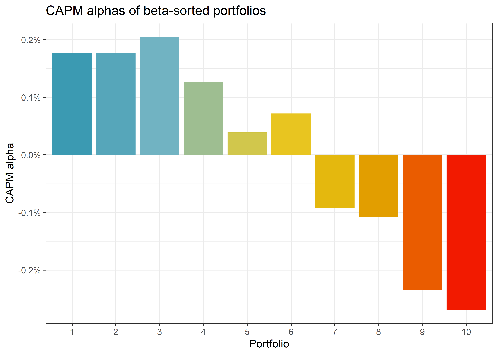
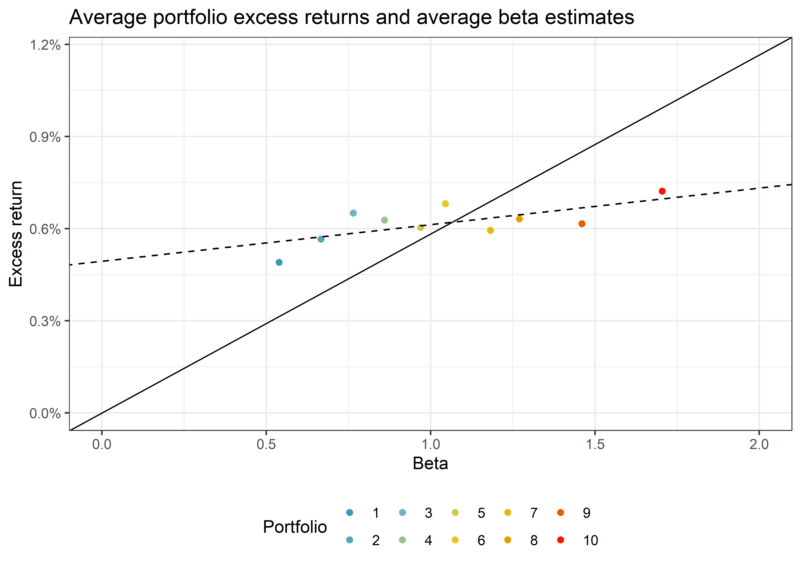
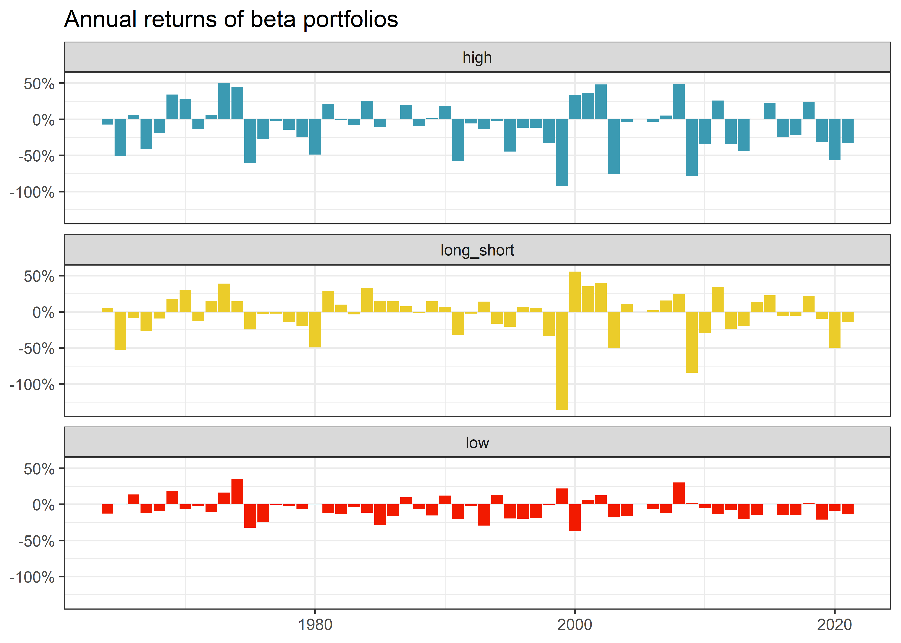

library(tidyverse)
library(RSQLite)
library(lubridate)
library(scales)
library(lmtest)
library(sandwich)Univariate Portfolio Sorts
In this chapter, we dive into portfolio sorts, one of the most widely used statistical methodologies in empirical asset pricing (e.g., Bali, Engle, and Murray 2016). The key application of portfolio sorts is to examine whether one or more variables can predict future excess returns. In general, the idea is to sort individual stocks into portfolios, where the stocks within each portfolio are similar with respect to a sorting variable, such as firm size. The different portfolios then represent well-diversified investments that differ in the level of the sorting variable. You can then attribute the differences in the return distribution to the impact of the sorting variable. We start by introducing univariate portfolio sorts (which sort based on only one characteristic) and tackle bivariate sorting in Chapter 9.
A univariate portfolio sort considers only one sorting variable \(x_{t-1,i}\). Here, \(i\) denotes the stock and \(t-1\) indicates that the characteristic is observable by investors at time \(t\).
The objective is to assess the cross-sectional relation between \(x_{t-1,i}\) and, typically, stock excess returns \(r_{t,i}\) at time \(t\) as the outcome variable. To illustrate how portfolio sorts work, we use estimates for market betas from the previous chapter as our sorting variable.
The current chapter relies on the following set of packages.
Compared to previous chapters, we introduce lmtest (Zeileis and Hothorn 2002) for inference for estimated coefficients, and sandwich (Zeileis 2006) for different covariance matrix estimators.
Data Preparation
We start with loading the required data from our SQLite-database introduced in Chapters 2-4. In particular, we use the monthly CRSP sample as our asset universe. Once we form our portfolios, we use the Fama-French market factor returns to compute the risk-adjusted performance (i.e., alpha). beta is the tibble with market betas computed in the previous chapter.
tidy_finance <- dbConnect(
SQLite(),
"data/tidy_finance.sqlite",
extended_types = TRUE
)
crsp_monthly <- tbl(tidy_finance, "crsp_monthly") |>
select(permno, month, ret_excess, mktcap_lag) |>
collect()
factors_ff_monthly <- tbl(tidy_finance, "factors_ff_monthly") |>
collect()
beta <- tbl(tidy_finance, "beta") |>
collect()Sorting by Market Beta
Next, we merge our sorting variable with the return data. We use the one-month lagged betas as a sorting variable to ensure that the sorts rely only on information available when we create the portfolios. To lag stock beta by one month, we add one month to the current date and join the resulting information with our return data. This procedure ensures that month \(t\) information is available in month \(t+1\). You may be tempted to simply use a call such as crsp_monthly |> group_by(permno) |> mutate(beta_lag = lag(beta))) instead. This procedure, however, does not work correctly if there are non-explicit missing values in the time series.
beta_lag <- beta |>
mutate(month = month %m+% months(1)) |>
select(permno, month, beta_lag = beta_monthly) |>
drop_na()
data_for_sorts <- crsp_monthly |>
inner_join(beta_lag, by = c("permno", "month"))The first step to conduct portfolio sorts is to calculate periodic breakpoints that you can use to group the stocks into portfolios. For simplicity, we start with the median lagged market beta as the single breakpoint. We then compute the value-weighted returns for each of the two resulting portfolios, which means that the lagged market capitalization determines the weight in weighted.mean().
beta_portfolios <- data_for_sorts |>
group_by(month) |>
mutate(
breakpoint = median(beta_lag),
portfolio = case_when(
beta_lag <= breakpoint ~ "low",
beta_lag > breakpoint ~ "high"
)
) |>
group_by(month, portfolio) |>
summarize(ret = weighted.mean(ret_excess, mktcap_lag), .groups = "drop")Performance Evaluation
We can construct a long-short strategy based on the two portfolios: buy the high-beta portfolio and, at the same time, short the low-beta portfolio. Thereby, the overall position in the market is net-zero, i.e., you do not need to invest money to realize this strategy in the absence of frictions.
beta_longshort <- beta_portfolios |>
pivot_wider(month, names_from = portfolio, values_from = ret) |>
mutate(long_short = high - low)We compute the average return and the corresponding standard error to test whether the long-short portfolio yields on average positive or negative excess returns. In the asset pricing literature, one typically adjusts for autocorrelation by using Whitney K. Newey and West (1987) \(t\)-statistics to test the null hypothesis that average portfolio excess returns are equal to zero. One necessary input for Newey-West standard errors is a chosen bandwidth based on the number of lags employed for the estimation. While it seems that researchers often default on choosing a pre-specified lag length of 6 months, we instead recommend a data-driven approach. This automatic selection is advocated by Whitney K. Newey and West (1994) and available in the sandwich package. To implement this test, we compute the average return via lm() and then employ the coeftest() function. If you want to implement the typical 6-lag default setting, you can enforce it by passing the arguments lag = 6, prewhite = FALSE to the coeftest() function in the code below and it passes them on to NeweyWest().
model_fit <- lm(long_short ~ 1, data = beta_longshort)
coeftest(model_fit, vcov = NeweyWest)
t test of coefficients:
Estimate Std. Error t value Pr(>|t|)
(Intercept) 0.000287 0.001312 0.22 0.83The results indicate that we cannot reject the null hypothesis of average returns being equal to zero. Our portfolio strategy using the median as a breakpoint hence does not yield any abnormal returns. Is this finding surprising if you reconsider the CAPM? It certainly is. The CAPM yields that the high beta stocks should yield higher expected returns. Our portfolio sort implicitly mimics an investment strategy that finances high beta stocks by shorting low beta stocks. Therefore, one should expect that the average excess returns yield a return that is above the risk-free rate.
Functional Programming for Portfolio Sorts
Now we take portfolio sorts to the next level. We want to be able to sort stocks into an arbitrary number of portfolios. For this case, functional programming is very handy: we employ the curly-curly-operator to give us flexibility concerning which variable to use for the sorting, denoted by var. We use quantile() to compute breakpoints for n_portfolios. Then, we assign portfolios to stocks using the findInterval() function. The output of the following function is a new column that contains the number of the portfolio to which a stock belongs.
assign_portfolio <- function(data, var, n_portfolios) {
breakpoints <- data |>
summarize(breakpoint = quantile({{ var }},
probs = seq(0, 1, length.out = n_portfolios + 1),
na.rm = TRUE
)) |>
pull(breakpoint) |>
as.numeric()
assigned_portfolios <- data |>
mutate(portfolio = findInterval({{ var }},
breakpoints,
all.inside = TRUE
)) |>
pull(portfolio)
return(assigned_portfolios)
}We can use the above function to sort stocks into ten portfolios each month using lagged betas and compute value-weighted returns for each portfolio. Note that we transform the portfolio column to a factor variable because it provides more convenience for the figure construction below.
beta_portfolios <- data_for_sorts |>
group_by(month) |>
mutate(
portfolio = assign_portfolio(
data = cur_data(),
var = beta_lag,
n_portfolios = 10
),
portfolio = as.factor(portfolio)
) |>
group_by(portfolio, month) |>
summarize(
ret = weighted.mean(ret_excess, mktcap_lag),
.groups = "drop"
)More Performance Evaluation
In the next step, we compute summary statistics for each beta portfolio. Namely, we compute CAPM-adjusted alphas, the beta of each beta portfolio, and average returns.
beta_portfolios_summary <- beta_portfolios |>
left_join(factors_ff_monthly, by = "month") |>
group_by(portfolio) |>
summarize(
alpha = as.numeric(lm(ret ~ 1 + mkt_excess)$coefficients[1]),
beta = as.numeric(lm(ret ~ 1 + mkt_excess)$coefficients[2]),
ret = mean(ret)
)Figure 1 illustrates the CAPM alphas of beta-sorted portfolios. It shows that low beta portfolios tend to exhibit positive alphas, while high beta portfolios exhibit negative alphas.
beta_portfolios_summary |>
ggplot(aes(x = portfolio, y = alpha, fill = portfolio)) +
geom_bar(stat = "identity") +
labs(
title = "CAPM alphas of beta-sorted portfolios",
x = "Portfolio",
y = "CAPM alpha",
fill = "Portfolio"
) +
scale_y_continuous(labels = percent) +
theme(legend.position = "None")
These results suggest a negative relation between beta and future stock returns, which contradicts the predictions of the CAPM. According to the CAPM, returns should increase with beta across the portfolios and risk-adjusted returns should be statistically indistinguishable from zero.
The Security Market Line and Beta Portfolios
The CAPM predicts that our portfolios should lie on the security market line (SML). The slope of the SML is equal to the market risk premium and reflects the risk-return trade-off at any given time. Figure 2 illustrates the security market line: We see that (not surprisingly) the high beta portfolio returns have a high correlation with the market returns. However, it seems like the average excess returns for high beta stocks are lower than what the security market line implies would be an “appropriate” compensation for the high market risk.
sml_capm <- lm(ret ~ 1 + beta, data = beta_portfolios_summary)$coefficients
beta_portfolios_summary |>
ggplot(aes(
x = beta,
y = ret,
color = portfolio
)) +
geom_point() +
geom_abline(
intercept = 0,
slope = mean(factors_ff_monthly$mkt_excess),
linetype = "solid"
) +
geom_abline(
intercept = sml_capm[1],
slope = sml_capm[2],
linetype = "dashed"
) +
scale_y_continuous(
labels = percent,
limit = c(0, mean(factors_ff_monthly$mkt_excess) * 2)
) +
scale_x_continuous(limits = c(0, 2)) +
labs(
x = "Beta", y = "Excess return", color = "Portfolio",
title = "Average portfolio excess returns and average beta estimates"
)
To provide more evidence against the CAPM predictions, we again form a long-short strategy that buys the high-beta portfolio and shorts the low-beta portfolio.
beta_longshort <- beta_portfolios |>
ungroup() |>
mutate(portfolio = case_when(
portfolio == max(as.numeric(portfolio)) ~ "high",
portfolio == min(as.numeric(portfolio)) ~ "low"
)) |>
filter(portfolio %in% c("low", "high")) |>
pivot_wider(month, names_from = portfolio, values_from = ret) |>
mutate(long_short = high - low) |>
left_join(factors_ff_monthly, by = "month")Again, the resulting long-short strategy does not exhibit statistically significant returns.
coeftest(lm(long_short ~ 1, data = beta_longshort),
vcov = NeweyWest
)
t test of coefficients:
Estimate Std. Error t value Pr(>|t|)
(Intercept) 0.00232 0.00322 0.72 0.47However, the long-short portfolio yields a statistically significant negative CAPM-adjusted alpha, although, controlling for the effect of beta, the average excess stock returns should be zero according to the CAPM. The results thus provide no evidence in support of the CAPM. The negative value has been documented as the so-called betting against beta factor (Frazzini and Pedersen 2014). Betting against beta corresponds to a strategy that shorts high beta stocks and takes a (levered) long position in low beta stocks. If borrowing constraints prevent investors from taking positions on the SML they are instead incentivized to buy high beta stocks, which leads to a relatively higher price (and therefore lower expected returns than implied by the CAPM) for such high beta stocks. As a result, the betting-against-beta strategy earns from providing liquidity to capital constraint investors with lower risk aversion.
coeftest(lm(long_short ~ 1 + mkt_excess, data = beta_longshort),
vcov = NeweyWest
)
t test of coefficients:
Estimate Std. Error t value Pr(>|t|)
(Intercept) -0.00447 0.00256 -1.75 0.081 .
mkt_excess 1.16555 0.09562 12.19 <2e-16 ***
---
Signif. codes: 0 '***' 0.001 '**' 0.01 '*' 0.05 '.' 0.1 ' ' 1Figure 3 shows the annual returns of the extreme beta portfolios we are mainly interested in. The figure illustrates no consistent striking patterns over the last years - each portfolio exhibits periods with positive and negative annual returns.
beta_longshort |>
group_by(year = year(month)) |>
summarize(
low = prod(1 + low),
high = prod(1 + high),
long_short = prod(1 + long_short)
) |>
pivot_longer(cols = -year) |>
ggplot(aes(x = year, y = 1 - value, fill = name)) +
geom_col(position = "dodge") +
facet_wrap(~name, ncol = 1) +
theme(legend.position = "none") +
scale_y_continuous(labels = percent) +
labs(
title = "Annual returns of beta portfolios",
x = NULL, y = NULL
)
Overall, this chapter shows how functional programming can be leveraged to form an arbitrary number of portfolios using any sorting variable and how to evaluate the performance of the resulting portfolios. In the next chapter, we dive deeper into the many degrees of freedom that arise in the context of portfolio analysis.
Exercises
- Take the two long-short beta strategies based on different numbers of portfolios and compare the returns. Is there a significant difference in returns? How do the Sharpe ratios compare between the strategies? Find one additional portfolio evaluation statistic and compute it.
- We plotted the alphas of the ten beta portfolios above. Write a function that tests these estimates for significance. Which portfolios have significant alphas?
- The analysis here is based on betas from monthly returns. However, we also computed betas from daily returns. Re-run the analysis and point out differences in the results.
- Given the results in this chapter, can you define a long-short strategy that yields positive abnormal returns (i.e., alphas)? Plot the cumulative excess return of your strategy and the market excess return for comparison.
References
Bali, Turan G, Robert F Engle, and Scott Murray. 2016. Empirical asset pricing: The cross section of stock returns. John Wiley & Sons. https://doi.org/10.1002/9781118445112.stat07954.
Frazzini, Andrea, and Lasse Heje Pedersen. 2014. “Betting against beta.” Journal of Financial Economics 111 (1): 1–25. https://doi.org/10.1016/j.jfineco.2013.10.005.
Newey, Whitney .K, and Kenneth D. West. 1994. “Automatic lag selection in covariance matrix estimation.” The Review of Economic Studies 61 (4): 631–53. https://www.jstor.org/stable/2297912.
Newey, Whitney K., and Kenneth D. West. 1987. “A simple, positive semi-definite, heteroskedasticity and autocorrelation consistent covariance Matrix.” Econometrica 55 (3): 703–8. http://www.jstor.org/stable/1913610.
Zeileis, Achim. 2006. “Object-Oriented computation of sandwich estimators.” Journal of Statistical Software 16 (9): 1–16. http://dx.doi.org/10.18637/jss.v016.i09.
Zeileis, Achim, and Torsten Hothorn. 2002. “Diagnostic checking in regression relationships.” R News 2 (3): 7–10. https://CRAN.R-project.org/doc/Rnews/.